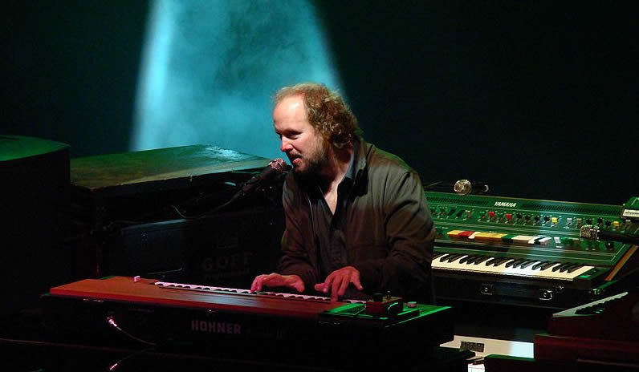
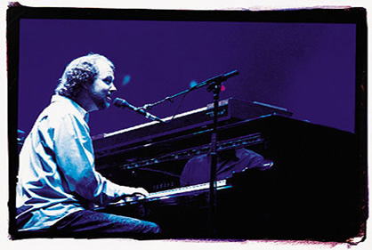

The Man Behind the Keys- Page McConnell
Trey Anastasio
Mike Gordon
Page McConnell
Jon Fishman
| Home | Band Members | History | Popular Discography | Live |
The Man Behind the Keys- Page McConnell
Trey Anastasio
Mike Gordon
Page McConnell
Jon Fishman
Page Samuel McConnell (born May 17, 1963 in Philadelphia, Pennsylvania) is an American multi-instrumentalist most noted for his work as a songwriter and keyboardist with the American rock band Phish.
In addition to being a member of Phish since 1985, McConnell has had several other musical liaisons during his career, including a trio named Vida Blue. He released his first solo album, featuring original compositions, in 2007. 
McConnell was born in Philadelphia, Pennsylvania, in 1963. By age four he was learning to play the piano, and when his family relocated to Basking Ridge, New Jersey, in 1969 he continued his musical studies, eventually playing in bands with friends by his seventh grade. His father, Dr. Jack B. McConnell, worked at McNeil Laboratories and helped to develop Tylenol and the MRI. The elder McConnell then started a free health clinic for kids that was staffed by retired health workers in Hilton Head, South Carolina. McConnell spent a year at Gill St. Bernard's School, in Gladstone, New Jersey before moving away. McConnell spent his senior year of high school at Lawrence Academy at Groton, in Groton, Massachusetts, and then attended Southern Methodist University from Fall 1982 to Spring 1984, where he joined Kappa Alpha Order. McConnell transferred to Goddard College that fall and graduated in December 1987. This is where he met his mentor, Karl Boyle, and wrote his senior study, The Art of Improvisation under Boyle's guidance. McConnell joined Phish in 1985 and played with the band for the first time on May 3 of that year. McConnell has written a number of Phish originals including "Cars Trucks Buses," "Magilla," "Army of One," "I Been Around," "Windy City," and "If I Told You." He has also coauthored numerous other songs with the band.

Page McConnell's current rig includes: - a Yamaha C7 concert grand (7'6") piano (since 2.3.93), - a Hammond B3 organ with a Leslie 122 speaker (modified with individual percussion and chorus output knobs for a more tuned effect), - a 1969 Fender Rhodes Silver Sparkle Top Suitcase 73 Model electric piano, - a Hohner D6 Clavinet (often used in sync with a wah-wah pedal), - a Moog Little Phatty (sometimes switched out for a Prophet '08), - a Yamaha CS-60 polyphonic synthesizer